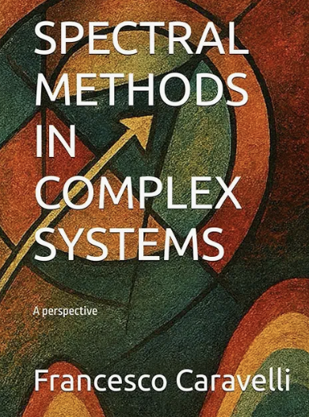

Books
Selected authored and co-authored volumes.
Spectral Methods in Complex Systems: A Perspective

Author: Francesco Caravelli
Publisher: Independently published (2025)
Spectral Methods in Complex Systems is a comprehensive yet accessible introduction to spectral methods in linear algebra and their applications across physics, computer science, and network theory. The book develops from the fundamentals — matrices, determinants, eigenvalues, and graph theory — into advanced topics such as perturbation theory, pseudospectra, functional calculus, and spectral decompositions. Throughout, emphasis is placed on practical tools and formulae rather than lengthy proofs, making the text a usable companion for students and researchers alike.
The text collects an extensive library of results, identities, and worked-out equations. These mathematical tools are then placed in the context of complex systems applications: community detection, stability in ecology and economics, PageRank and ranking algorithms, epidemic spreading, synchronization, and memristive networks, among others.
Intended primarily for advanced undergraduates and beginning graduate students, the book also serves as a reference for researchers who wish to approach interdisciplinary problems from a spectral perspective. By weaving together linear algebra, dynamical systems, and network science, Spectral Methods in Complex Systems offers both a technical manual and a conceptual guide to the spectral viewpoint in modern complexity research.
A Collaborative Approach to Trade: Enhancing Connectivity in Sea- and Land-locked Countries

Authors: Francesca Medda, Francesco Caravelli, Simone Caschili, Alan Wilson.
Publisher: Springer (2017)
This book applies regional analysis to the challenges facing global investment agencies seeking to enhance trade in lagging regions. It shows how spatial interaction and agent-based modelling can be used as the basis for developing new plans and policies. An in-depth analysis of trade routes is presented, which can be used to develop policies for increasing efficiency and reducing costs. Landlocked Uganda and the sea-locked South Pacific Islands serve to illustrate the problems of covering sizable distances, accelerating export flows and improving supply-chain efficiency. These examples also provide an excellent illustration of the power of regional science, from assembling databases in difficult situations to developing and applying models of the trade system.